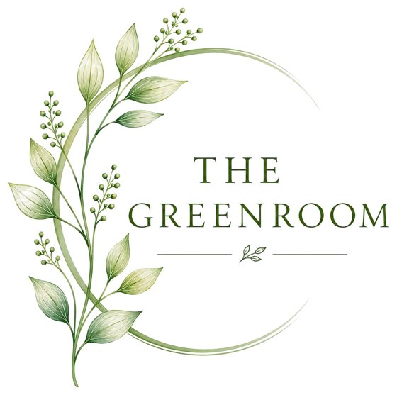
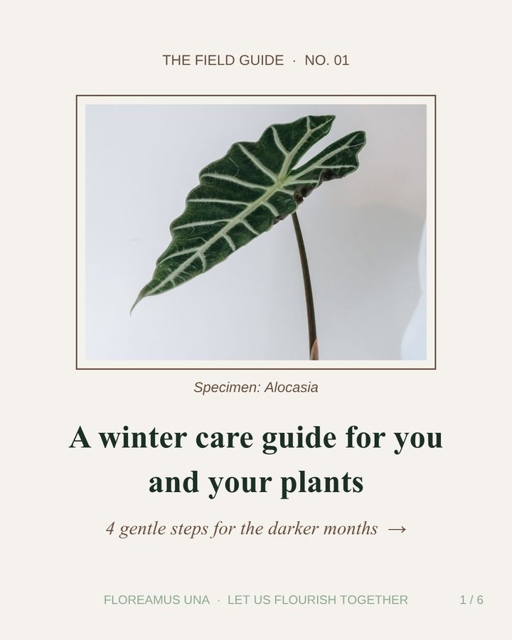
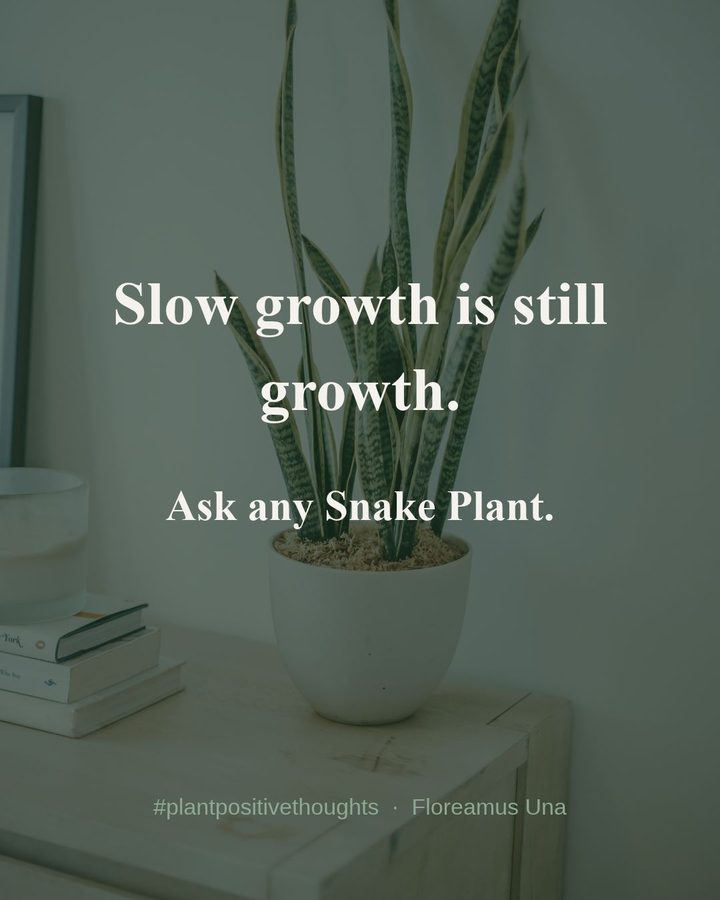
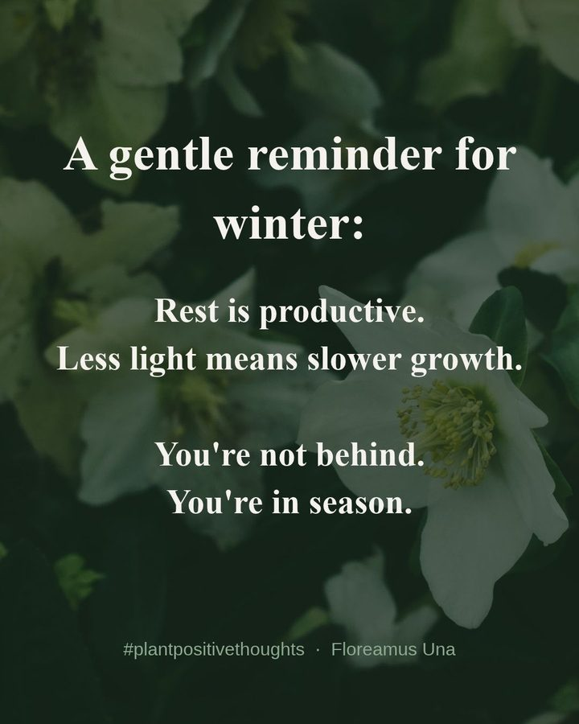
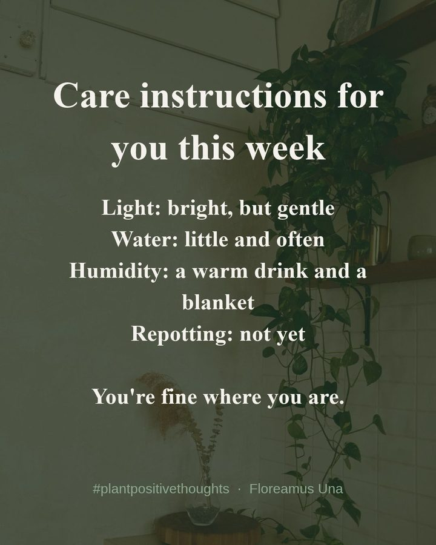
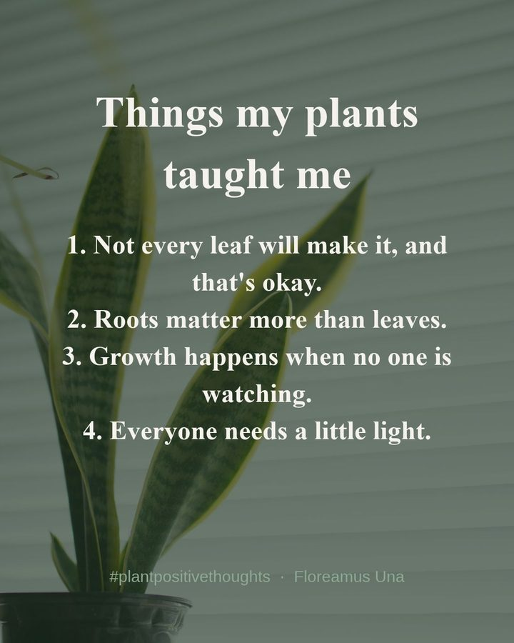
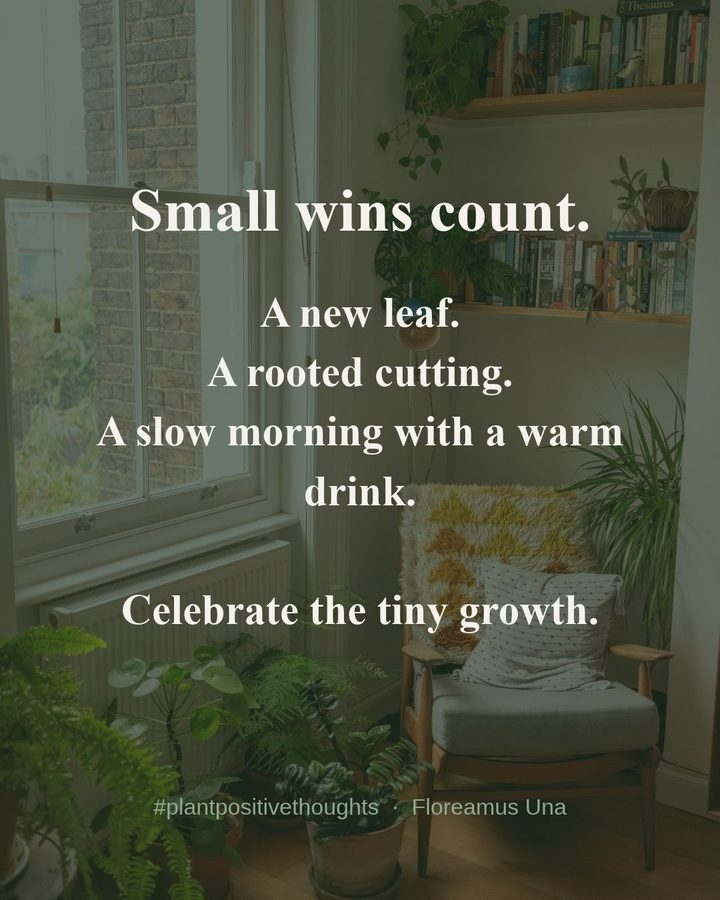
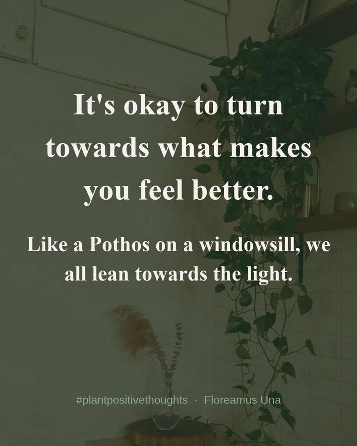
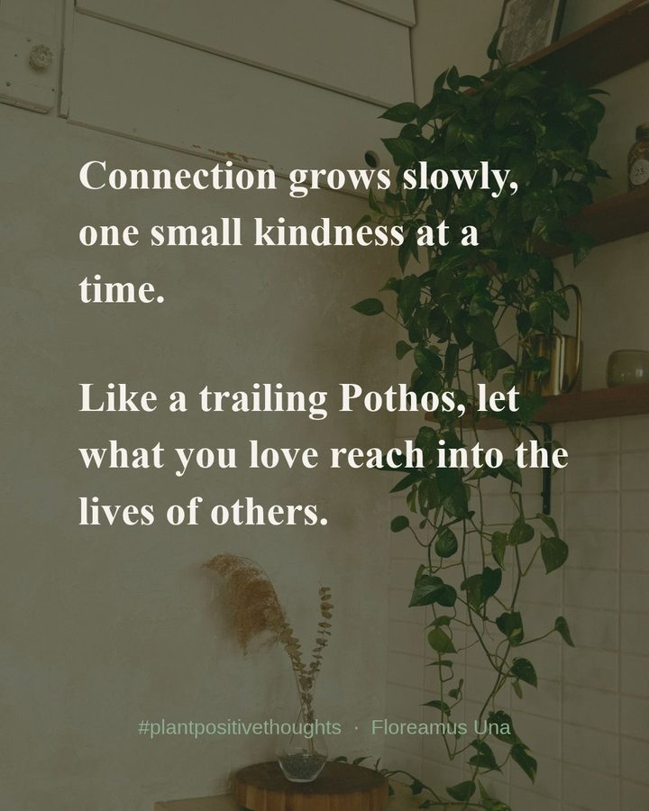
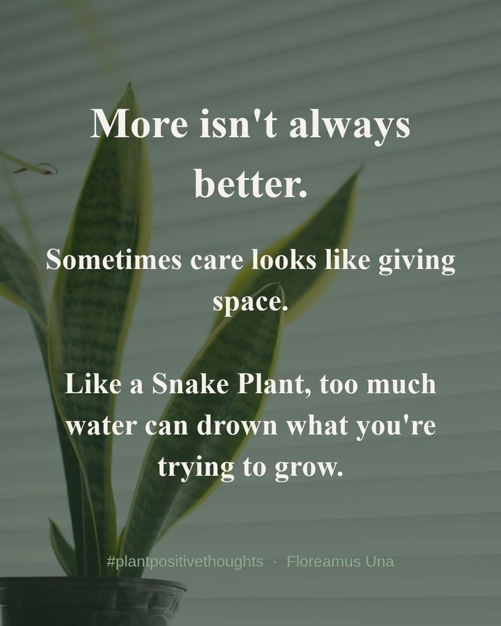

Houseplant care guides & community
Plant positive thoughts. Everything you need to keep your plants, and yourself, thriving.
Plant care guides, A–Z
Tap a plant to open its guide.
Seasonal tips ·
What your plants need right now
Quote of the day

The Field Guide
Swipe-through guides
Six short, gentle guides for you and your plants.
The Floreamus Una app
Track watering, get care reminders and check in on your own well-being alongside your plants.
Open the appPlants & well-being
Why do plants make us feel better? Brett explores the research.
Read The Green PrescriptionEvery care guide
Full, printable care guides for each plant.
AlocasiaBird's Nest FernBoston FernCalatheaCast Iron PlantChinese EvergreenFiddle Leaf FigGolden PothosHaworthiaHeartleaf PhilodendronMonsteraParlour PalmPeace LilyPeperomiaPonytail PalmPrayer PlantRubber PlantSnake PlantSpider PlantZZ Plant
"Flourish Together" gallery
A few of our favourite quote cards. Looking for practical guides? Browse The Field Guide.
Share your plant corner with #FlourishTogether on Instagram or TikTok for a chance to be featured.







